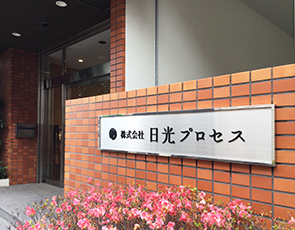

HISTORY
70年のあゆみ
大阪市天王寺区寺田町
株式会社日光プロセス創立
写真製版の会社として創業
写真の技術を応用して印刷用の版を作っていた
1953NHKがテレビ
放送を開始
放送を開始
戦後の高度経済成長期
新しい雑誌が多数発売されるなど、印刷業界も成長していった時代
1964東京オリンピック
開催
開催
東京都港区新橋
東京営業所を開設
当時の製版は〈写真原稿と版下を作る→コンタクトスクリーンを通し網点化した製版フィルムを作る→ 感光して PS 版(金属板)に焼き付ける〉という光学式
1970大阪万博開催
大阪市天王寺区寺田町
電子製版センター開設
80年代では印刷のデジタル化が進み、光学式から電子式へ別々の作業だった〈原稿の色分解と網点化〉を同時に行えるようになった
1982世界初のCDが
日本で発売開始
日本で発売開始
Macintoshの導入・増設を開始
制作から印刷までの作業が1台のPCで行えるDTPの普及に対応
90年代を通してデータ原稿へと移行していく
1994家庭用ゲーム機が
流行
流行
マックスアート導入・増設
インクを紙に直接吹き付けて印刷するインクジェット式プリンターを導入
鮮やかなRGB出力が可能で、大判ポスターの出力などに活躍
2000新紙幣2000円札の
発行開始
発行開始
Japan Color認証制度
プルーフ運用認証を取得
印刷の色基準を満たした環境としてJapan Color認証を取得
オフセット印刷機と同じ色品質でインクジェットの校正刷りを提供できる
2011東日本大震災発生
大阪・広島・京都
『日光プロセス創業60周年記念ポスター展覧会』
東京ではUVインクジェット機を導入
特殊な紙や立体物へのプリントが可能になる
2014あべのハルカス
開業
開業
東京都墨田区菊川
本社機能を東京に移転

2015マイナンバーの
通知開始
通知開始
「Proof Jet F1100AQ」導入
オフセットの校正機からインクジェットの校正機へ移行
速さと品質の両立で校正作業をサポートする
2020山手線高輪
ゲートウェイ駅が
開業
ゲートウェイ駅が
開業
IT技術とWebの普及に伴い、印刷業界は転換期の時代に
2021東京オリンピック
パラリンピック
開催
パラリンピック
開催
創業70周年へ
表現域を紙媒体にとどめず、撮影システムやデジタルサイネージ、WEB制作など様々な媒体に広げ、企業や人々の思いに寄り添い「視えるカタチ」で表現する視覚表現企業へ
2022